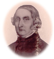

1792 - 1876
Ockelbos första riksdagsman

Fotots ägare:
Yngve Olsson
En ”Ljusets bonde” i Ockelbo
På hösten 1816 läste man en dag följande annons i en gävletidning: ”Först i nästa vecka åstundas resesällskap till Stockholm mot deltagande i halva skjutsen för den som resa vill. Svar lämnas till tryckeriet”.
En sådan resa tog från våra trakter säkerligen lika många dagar i anspråk, som vi nu behöva timmar för att komma till huvudstaden. Om det därtill var vinter och kallt, var det nog endast i trängande fall, som man gav sig av.
En tidig vintermorgon i januari 1840 startades emellertid just en sådan slädfärd från Östby i Ockelbo. I släden, som f.ö. ännu finns bevarad, satt riksdagsmannen Hans Persson, väl ompälsad och rustad för sin stockholmsresa.
Det var vid lagtima riksdagen 1840-41 som Hans Persson första gången representerade Gästrikland i hedersvärda bondeståndet. Han var 48 år gammal och ägde omdömet att vara en mycket respektabel, skötsam och begåvad bonde. Han synes också snart ha vunnit sina ståndsbröders aktning och redan vid början av denna sin första riksdag väljes han till ledamot av Allmänna besvärs- och ekonomiutskottet och förstärka statsutskottet.
Hans Persson hade redan i hemsocknen visat sitt varma intresse för ungdomens uppfostran och vid debatterna om folkundervisningen, som vid denna riksdag var den stora frågan, hade han tillfälle att både i utskottet och vid bondeståndets sammanträden framlägga sina synpunkter.
Ockelbobonden var ”en oklanderlig talare” och det råder intet tvivel om att hans sakliga inlägg haft verksam betydelse för frågans avgörande till allmogens fromma. Den 10 februari 1841 behandlar bondeståndet förslaget - d.v.s. folkskolestadgans första paragraf-, varvid Hans Persson håller sitt första längre anförande.
Enligt protokollet yttrade han: ”Då detta betänkande sist uti ståndet blev handlagt, var jag en tyst åhörare och borde måhända även vara det nu, enär ämnet blivit av så många värde medbröder skärskådat från alla sidor. Men det torde ursäktas, om jag anser min plikt att i denna fråga yttra min opinion. Jag vill visserligen icke bidraga därtill, att detta betänkande varder sönderstyckat.
Jag snarare finner en sammanjämkning nödig och vill därtill uppmana Eder, mina bröder, på det ej den byggnad vi önska uppförd, måtte likt Babels torn, alltid komma att sakna sin fullbordan. En sådan jämkning, med avseende på de olika lokala förehållandena i landet, synes mig just finnes i det av sekreteraren upplästa förslag, i vilket såsom en särskild paragraf bör uti författningen inrymmas.
Det är genom motioner från vårt stånd, synnerligen de av Sven Heurlin och Sahlström från Stockholms län ingivna, som allmänna uppmärksamheten blivit mera än någonsin väckt på nödvändigheten av en förbättrad folkundervisning och utskotten hava, med nit för saken, sökt att gå alla billiga önskningar till mötes. Det gives visserligen en kast, som synes motverka folkbildningen.
Jag skulle önska, att vi ej själva göra oss skyldiga till detsamma, genom de många skiljaktiga åsikter som här tyckas vilja göra sig gällande. Det finns knappt någon punkt, emot vilken icke anmärkning nu åter blivit gjord; jag vill minnas, att diskussionen vid återremissen gick på 80 skrivna ark. Hur är det väl möjligt att komma till något gott resultat, när man är så föga böjd att sammanjämka de många meningarna.
Åtskilligt har blivit anmärkt, som icke rimligtvis har godkänts. Man har t.ex. framkastat, att för fattigmansbarn ej behövs så många bildningsanstalter. Men det är just de fattiga, som behöva dem. De rika hava så många tillfällen att, utan Statens mellankomst, skaffa sig bildning. För den fattige är ofta en god uppfostran dess enda egendom, då han utan materiella tillgångar kastas ut i världen.
Stora män, vilkas lärdom och snille varit en heder för deras fädernesland, hava utgått från ringa kojor. Så var det med framlidne ärkebiskopen Wallin. Han yttrade: ”Mitt hela arv var en bibel, det Gudi nog”. Hans snille och lärdom voro honom förmer än ärvda ägodelar. Jag vill här erinra om en Linné, en Lundblad och ho vet huru många snillen är dolt bland den stora hopen?
Jag har haft tillfälle, under innevarande riksdag bevista en skola för dövstumma och blinda. Jag såg där, huru långt, både uti religiös och annan kunskap, sådana olyckliga numera kunna hinna, vilka förut därifrån varit alldeles uteslutna. Varför skulle man vilja hindra dem, som hava både syn och hörsel, att inhämta det ingalunda för stora kunskapsmått, vilket i förslaget avses?
Man har ock velat framställa kvinnan såsom mindre i behov av bildning. Det är likväl av modern, som, åtminstone bland allmogen, barnen skola inhämta sitt första lilla kunskapsmått och det är hon som skall tillse deras uppfostran under hela deras barndom. Detta tyckes förutsätta att hon själv skall vara i saknad av nödiga kunskaper.
Slutligen får jag fästa uppmärksamheten därpå, att 5 § 3 mom. ingalunda föreskriver att den sammanslagna klockare- och skollärarlönen skall uppgå till ett belopp av 40 tunnor spannmål, utan endast att när de sammanslagna lönerna överstiga detta belopp, skall det stå församlingen fritt att å skollärarlönen avdraga överskottet”.
Under den fortsatta behandlingen hävdar Hans Persson vid flera tillfällen sin ståndpunkt. Han vill bl.a. att statsmakterna skola ge klart besked om att minst en fast skola måste inrättas inom varje socken. Bondeståndet godkände dock för sin del med 51 röster mot 49 Erik Perssons i Forsa förslag, att kommunerna själva borde få bestämma om skolorna skulle vara fasta eller flyttande.
De fyra stånden kunde inte komma till något enigt beslut, utan utskotten måste söka åstadkomma en sammanjämkning och först den 14 juni 1841 avläts riksdagens skrivelse till Kungl. Maj:t och ett år senare, den 18 juni 1842, gav Karl XIV Johan sin bekräftelse åt ”Kungl. Maj:ts nådiga stadga angående folkundervisningen i riket”.
Medan folkundervisningsfrågan vandrade sin väg fram och åter mellan utskott och stånd behandlades bl.a. även ett betänkande rörande anslag till universiteten och även här visade sig Hans Persson som den vidsynte bonde han i verkligheten är. Han yttrade; ”Ehuru jag alltid instämmer med dem, som vilja hushålla väl med statens medel, kan jag likväl icke vägra bifall till de statsanslag, vilkas beviljande icke kan undvikas.
Sådant är, efter mitt omdöme, förhållandet med det ifrågavarande och det kan icke vara annat än i högsta grad inkonsekvent att, såsom bondeståndet säga sig ivra för folkundervisningen, åt vilken man här i detta stånd vid mer än ett tillfälle förklarat sig önska största framgång, men vägra nödiga anslag för befrämjande av den högre bildningen, som utgör villkoret för folkundervisningens möjlighet.
På dessa skäl tillstyrker jag bifall till utskottets betänkande”. I den första folkskolestadgan bestämdes en övergångstid av fem år, inom vilken kommunerna skulle ha sitt ”skoleverk” fullbordat enligt minimifordringarna. Ockelbo fick sin första fasta folkskola under övergångstidens sista år d.v.s. 1847. Det var folkskolan vid Rabolöt, som då inrättades, och denna var den enda fasta skolan ännu 1871 medan det fanns fem flyttande skolor inom distriktet.
Fem år senare hade vi fått fem fasta skolor, varav en småskola och sju flyttande skolor. I Åmot fanns vid samma tid två fasta och tre flyttande skolor.
Job.
Källa: Ockelbo Hembygdsförenings årsbok Pålsgården 1942